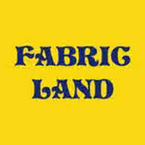

Trade Mark Journal No.2026/006 6 February 2026
UK00004328882 23 January 2026 (8,23,24,26)

- Class 8
- Sewing scissors; Embroidery scissors; Stitching awls.
- Class 23
- Sewing yarn; Sewing yarns; Sewing thread; Thread [sewing]; Sewing thread and yarn; Sewing thread for textile use; Embroidery yarn; Knitting yarn; Embroidery thread and yarn; Embroidery floss; Knitting threads; Darning yarn; Knitting yarns; Hand knitting wools; Hand knitting yarns; Darning thread and yarn; Embroidery thread.
- Class 24
- Fabric; Muslin fabric; Textile fabric; Embroidery fabric; Flannel [fabric]; Cotton fabric; Chenille fabric; Linen [fabric]; Polyester fabric; Denim fabric; Chenile fabric; Non-woven fabric; Fabric curtains; Rayon fabric; Knitted fabric; Crepe [fabric]; Woolen fabric; Jute fabric; Fabric valances; Nylon fabric; Gauze fabric; Foulard [fabric]; Curtain fabric; Woollen fabric; Moleskin [fabric]; Cotton knitted fabric; Adhesive fabric; Hemp fabric; Lingerie fabric; Jersey [fabric]; Fabrics; Fabric valences; Waterproof fabric; Silk fabric for printing patterns; Woven fabrics; Fabric linings for clothing; Ramie fabric; Coating fabric; Cheviot fabric; Jersey material [fabric]; Elastic woven fabrics; Moquettes [fabric]; Fiberglass fabric for textile use; Woven fabrics for cushions; Cotton fabrics; Lace fabrics; Lace fabrics ; Linen lining fabric for shoes; Corduroy fabrics; Lining fabrics of textile in the piece; Fabric for footwear; Footwear (Fabric for -); Woven linen fabrics; Upholstery fabrics; Polyester fabrics ; Textile fabrics; Textile fabrics in the piece; Batik fabrics; Zephyr fabric; Woven silk fabrics; Non-woven fabrics; Shirt fabrics; Silk fabrics; Esparto fabric; Elastic fabrics for clothing; Fabric flags; Non-woven textile fabrics; Crepe fabrics; Fabrics being textile piece goods for use in patchwork; Lining fabric for footwear; Woven fabrics for furniture; Lining fabric for shoes; Knitted fabrics of cotton yarn; Wool yarn fabrics; Knitted elastic fabrics for bodices; Hemp yarn fabrics; Knit lace fabrics; Fabrics being textile piece goods for use in embroidery; Knitted fabrics; Jute fabrics; Fabric for use in the manufacture of clothing; Knitted fabrics of silk yarn; Elastic yarn mixed fabrics; Rubberized textile fabrics; Curtain fabrics; Synthetic fiber fabric; Non-woven textile fabrics for use as interlinings; Paper yarn fabrics for textile use; Fabrics being textile piece goods for use in tapestry; Lining fabrics; Fabric bed valances; Kashmir fabric; Tensioning fabrics for upholstery; Fabric cascades; Covered rubber yarn fabrics [for textile use]; Waterproof textile fabrics; Curtains made of textile fabrics; Reinforced fabrics [textile]; Silk fabrics for furniture; Non-woven fabrics for use with linings; Woven fabrics for sofas; Fabric linings for headgear; Silk fabrics for printing patterns; Knitted elastic fabrics for sportswear; Textile fabrics for lingerie; Fabrics being textile piece goods; Textile fabrics for use in the manufacture of curtains.
- Class 26
- Fabric appliques; Fabric appliques [haberdashery]; Binding needles; Needles (Binding -); Bindings for hemming clothing; Lettering for marking fabric articles; Hemming web for ironing-on.
Discount Fabrics Limited